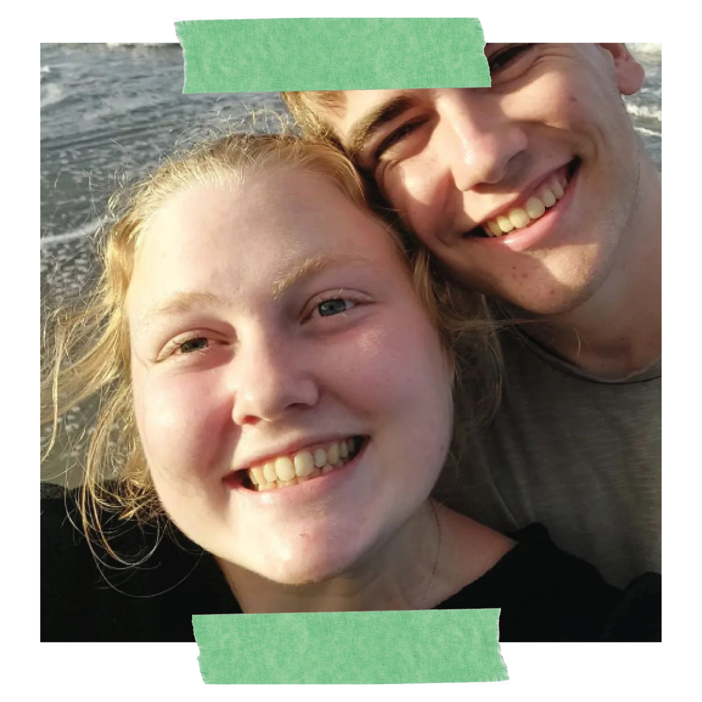
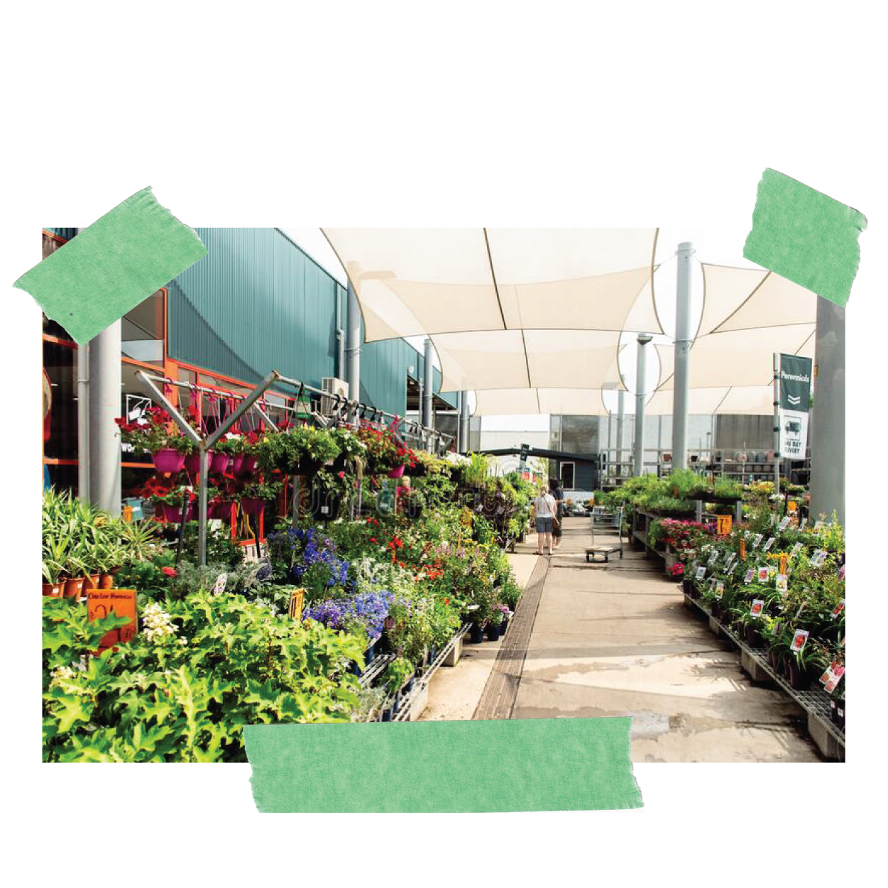
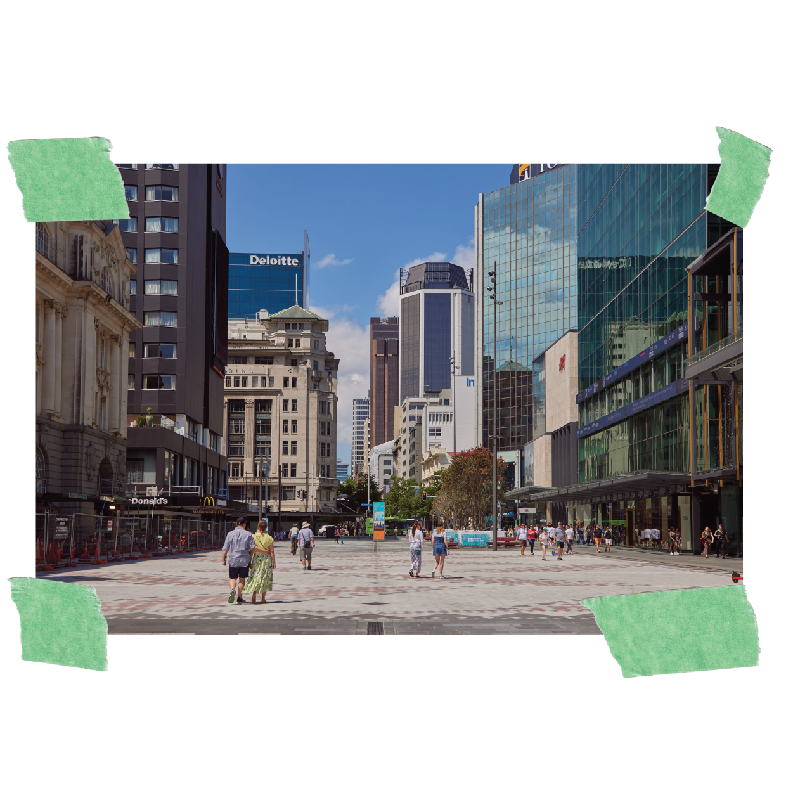

| Cooking
I like to cook, and I like to eat. Pasta of any kind is one of my favourites.
| My fiance!
We are getting married in December and are so excited to be taking this next step in our relationship!

| Houseplants
I like looking after my collection of houseplants, and Bunnings is my favourite place to buy new ones.

| Science fiction
Sci-fi movies and books are the best, some of my current favourites are The Peripheral, Peacemaker, The Prestige and Dry.
| Walking through the CBD
I like to stretch my legs in the Auckland CBD, I grew up in a tiny country town called Glen Massey and the city always has
something interesting to see.
